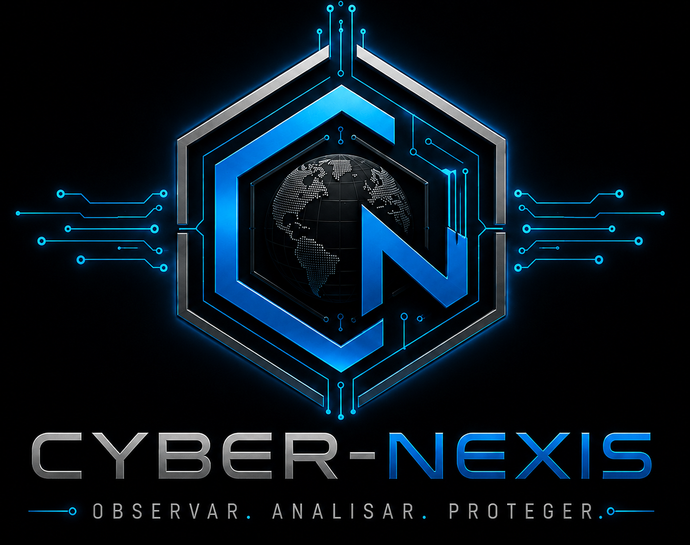

Regra 01
Autorização antes da ação
Nenhum sistema real pode ser testado sem autorização verificável do responsável e sem escopo documentado.

Estas regras definem os limites mínimos de conduta, autorização, segurança, auditoria e responsabilidade para qualquer membro da Cyber-Nexis.
Nenhum sistema real pode ser testado sem autorização verificável do responsável e sem escopo documentado.

A autorização para um ativo não se estende automaticamente a outros domínios, contas, redes, pessoas ou sistemas relacionados.

O operador deve demonstrar a vulnerabilidade com o mínimo de alteração, coleta, indisponibilidade ou exposição necessária.
.jpeg)
Credenciais, documentos, informações pessoais e bancos de dados não podem ser usados além do necessário para a atividade autorizada.
.jpeg)
Falhas são comunicadas primeiro ao responsável pelo sistema, com evidências, impacto e recomendações de correção.

Contas, sessões, tokens e fatores de autenticação não são compartilhados entre membros.
Cada membro recebe apenas as permissões necessárias para sua função, nível e missão atual.
.jpeg)
Autorizações, operadores, horários, ativos, mudanças de estado e resultados relevantes devem ser registrados.
Contratos, pagamentos, compras e infraestrutura devem possuir registro e responsável identificável.

Observadores e Iniciados treinam em laboratórios próprios ou autorizados e não executam testes independentes em sistemas reais.
Ferramentas de exploração são usadas somente em laboratório ou operação formalmente autorizada.
.jpeg)
Um membro não deve conduzir sozinho avaliações em que possua interesse pessoal, financeiro ou profissional relevante.
Vulnerabilidades de alto impacto devem ser comunicadas imediatamente ao comando responsável e tratadas como prioridade.
Se houver dano, indisponibilidade, acesso imprevisto a dados sensíveis ou saída acidental de escopo, a atividade deve parar e ser registrada.

Saber executar uma técnica não concede permissão para utilizá-la. Autoridade nasce de função, escopo e autorização.

Quem ultrapassa conscientemente os limites autorizados perde autoridade operacional enquanto o caso é investigado.